Ur Jontes perspektiv
Vad var dina tankar kvällen vi träffades?
Det var en väldigt snygg tjej i en grön klänning med vita blommor som stod och dansade med sina kompisar på nattklubben Charlies. Jag tänkte att jag var tvungen att göra något speciellt för att hon skulle notera mig. Då plockade jag fram de berömda höfterna som alla har hört talas om.
Vilka egenskaper och kvaliteter blev du kär i?
Jag blev kär i Jojjes höga energi, hennes lättsamhet och förmågan att ha lätt till skratt. Envisheten och hennes mål att lyckas. Jag blev även kär i hennes öppenhet och ärlighet.
När insåg du att det var vi?
Efter några veckor. Jojje bodde hos mig i princip sedan vi träffades.
Ur Jojjes perspektiv
Vad var dina tankar kvällen vi träffades?
Tyvärr kommer jag inte ihåg det men dagen efter hade jag fått en följareförfråga på Instagram och jag frågade Sara och Amanda om de visste vem det var och då berättade de för mig om killen som kommit fram på dansgolvet. Mer och mer mindes jag att någon kom fram och utbrast: "Tjejer, tjejer, kolla in de här höfterna" samtidigt som han svängde med höfterna.
Vilka egenskaper och kvaliteter blev du kär i?
Jag blev kär i Jontes lugn och hur trygg med honom jag kände mig så snabbt. Jag kände att jag kunde lita på honom. Jag blev kär i hans omtänksamhet, hur rolig han är och hur han alltid ser mig. Jag blev kär i hans lättsamhet, att han alltid har nära till skratt och att han alltid får mig att känna mig älskad.
När insåg du att det var vi?
Det var nog egentligen ganska tidigt men jag var så inställd på att det bara skulle vara en sommarflirt så det tog ett tag för mig att erkänna det för mig själv. Jag var dock helt säker när Jonte hade skjutsat tillbaka mig till Örebro när höstterminen skulle börja. Han stod och grät i min hall. Mina tårar var redan slut innan vi hade lämnat Linköping.
 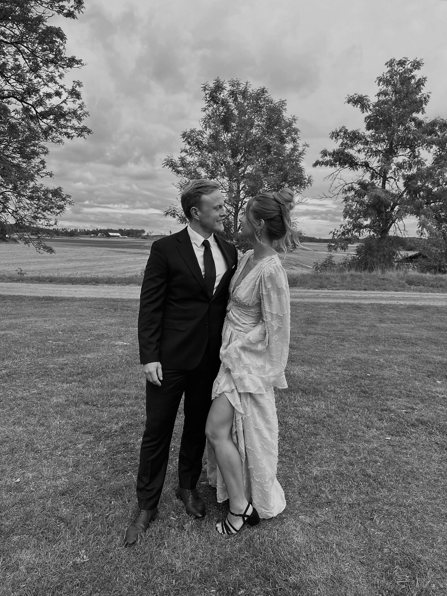
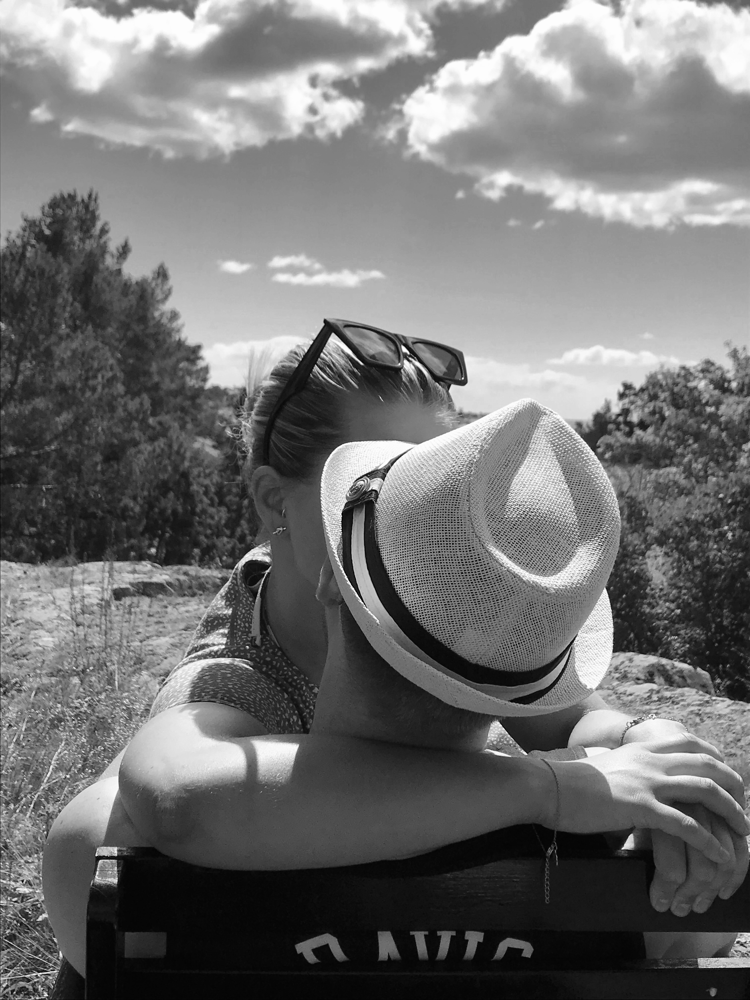
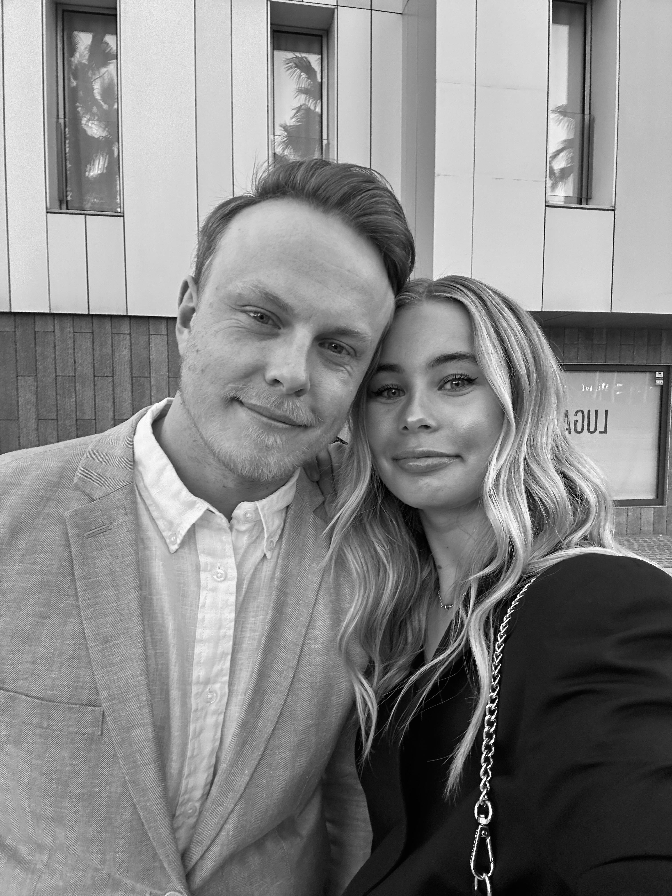
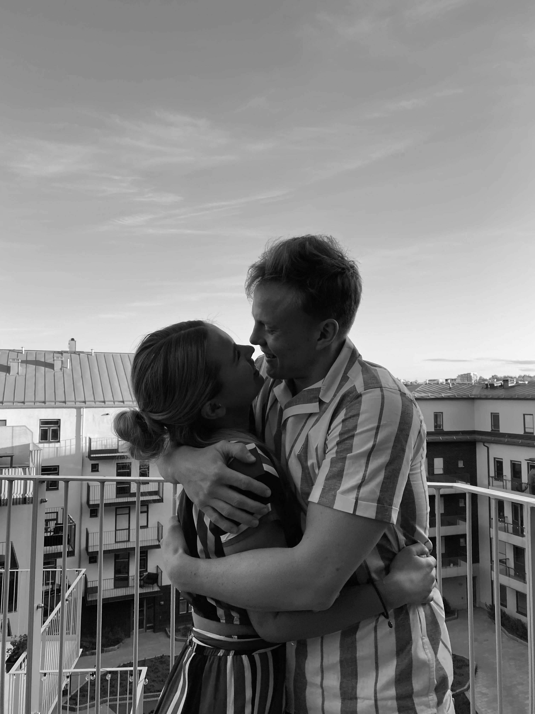
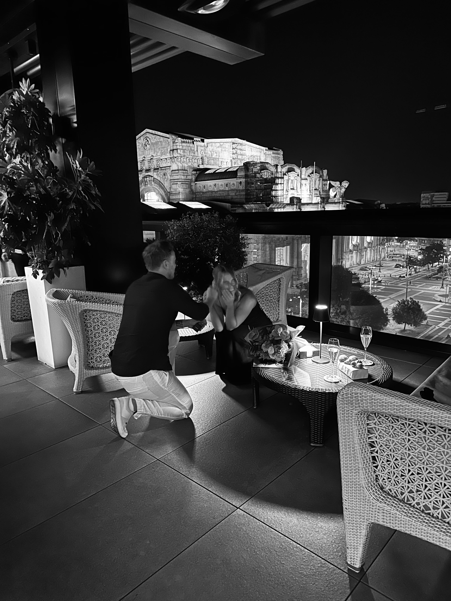
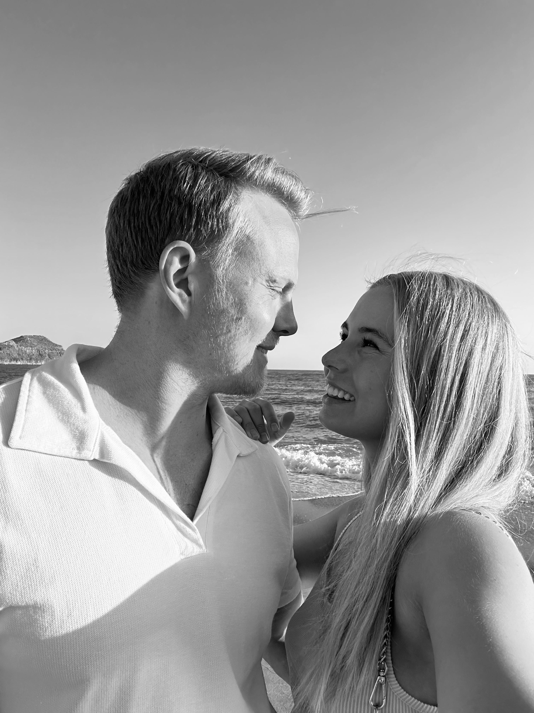
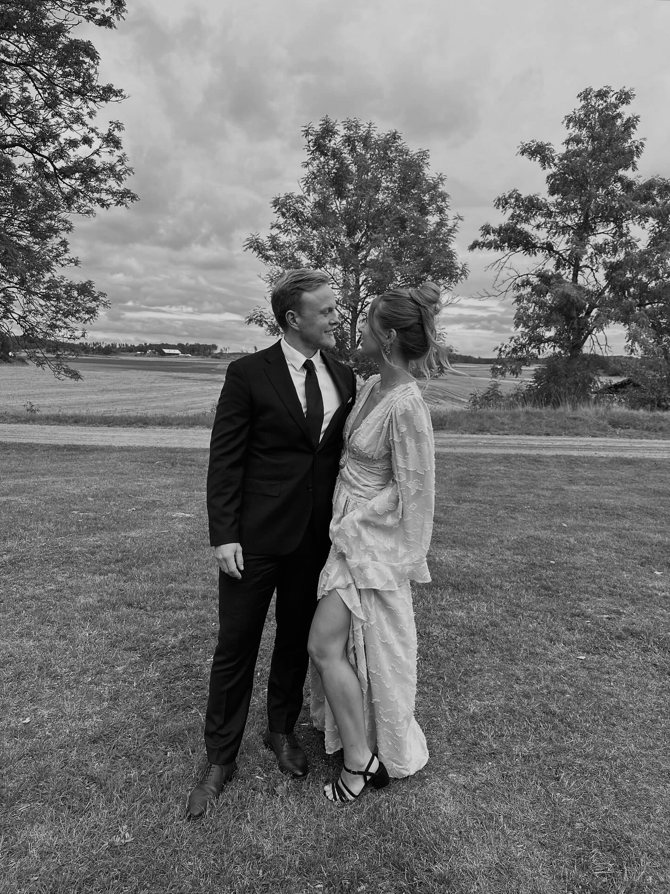
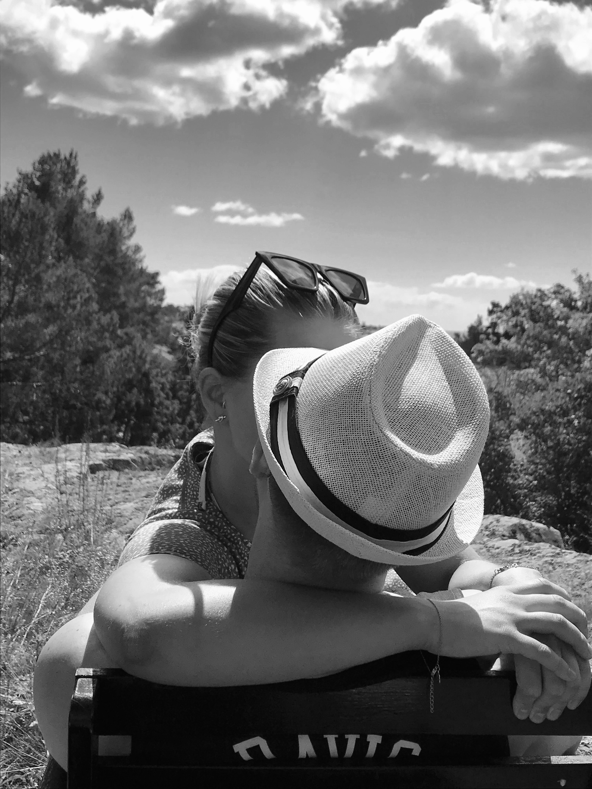
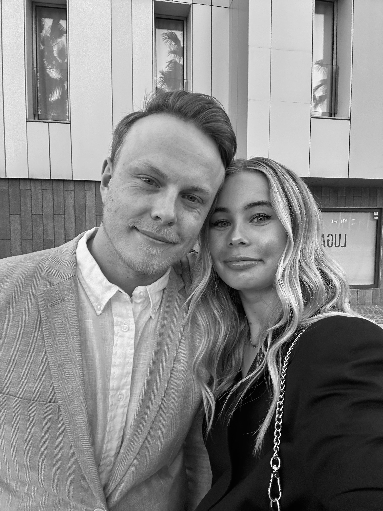
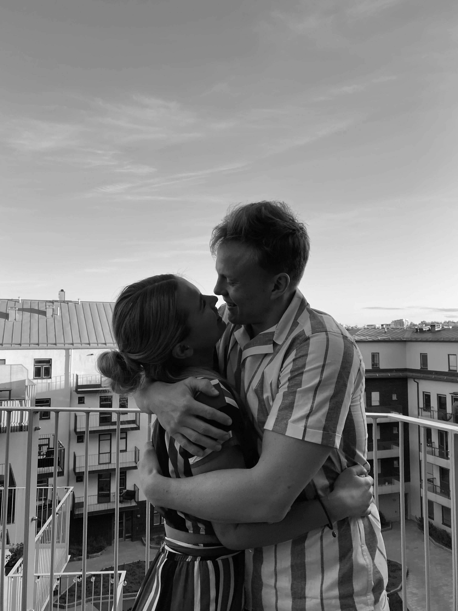
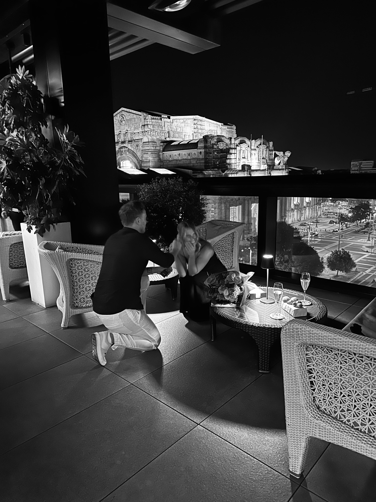
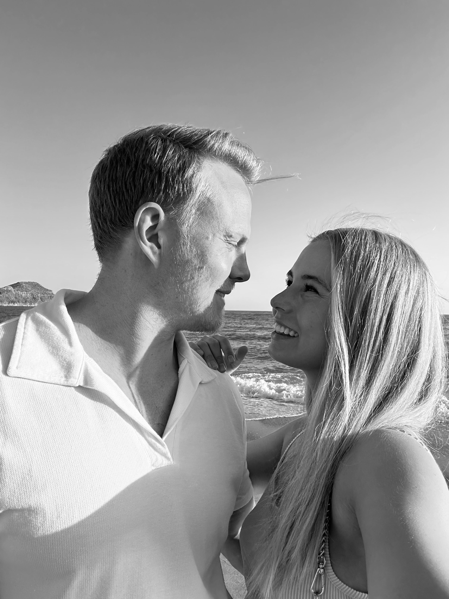